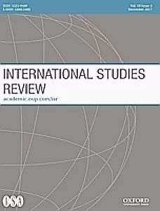

收录于合集

作品简介
【作者】 ****Susan Jackson是瑞典斯德哥尔摩大学经济史与国际关系系研究员。她的研究兴趣集中于新媒体、大数据与国际关系、军事与国际关系，特别关注大数据时代军事工业对国际关系的影响。 【编译】 陈舜波（国政学人编译员，悉尼大学国际关系系）
【校对】 蔡宇
【审核】 杨艺华
【排版】 ****杨洋 【来源】 **
**Jackson,S.(2018).A Turning IR Landscape in a Shifting Media Ecology: The
State of IR Literature on New Media. International Studies Review , 21 (3)
, 518-534.
期刊介绍

《国际研究评论》（International Studies Review）创刊于1957年，原名为Mershon International Studies Review，于1999年更改为当前的刊名，卷编号从1重新开始。该期刊是由牛津大学出版社代表国际研究协会出版的同行评审学术期刊，以季刊形式发行。主编是Amanda Murdie。2018年影响因子（Impact Factor）为2.076。
****媒体变迁中的国关转向：国关文献中的新媒体研究现状
A Turning IR Landscape in a Shifting Media Ecology: The State of IR Literature on New Media
Susan Jackson
内容提要
数字化信息的普及程度越来越高，而且社交媒体也变得越来越重要。然而，新媒体给国际关系学带来了许多挑战，而且这些挑战才刚刚开始被解决。大部分研究新媒体的国关学者都使用传统的定性研究方法，而不使用跨学科研究方法（尤其是社会科学之外的学科的研究方法）和社会科学的多元化方法论与定量法。这表明，人们普遍不了解新媒体/社交媒体。新媒体不仅是信息的来源和生产信息的工具，也是影响国际关系研究和实践的结构性因素，可以使国际关系学者重新认识国际关系学。本文旨在指出新媒体带来的这些挑战，并就如何将新媒体的结构作用运用到国际关系研究中去提出建议。本文以不断变化的媒体生态作为基础，去研究新媒体结构对国际关系的实践和视觉上转变所带来的挑战。
数字信息越来越成为人们生活必不可少的内容，给国际关系研究带来新的挑战。例如，拥有大量数字信息的技术公司能够对在线内容进行过滤和推广，不但会影响我们接触到的信息的内容和进行国际关系研究的方式，还可能在新媒体内容和结构方面产生虚假信息。此外，混合的媒体生态（ hybrid media ecology）对传统国关理论发起挑战，指出行为体如何依靠“适应，相互依赖，以及权力的集中和分散”改变他们之间的联系。这种不断变化的媒体生态意味着我们需要审视新媒体本身是否以及何时影响了国际关系学者所研究和实践的政治，以及这些结构是否可能对国际关系学者提出的问题以及答案产生影响。本文旨在表明如何将新媒体的结构作用运用到国际关系研究中以应对这些挑战。在多元化和跨学科研究国际关系的势头下（例如，Vowe和Henn，2016；Bleiker，2015和2017；Bennett，2015；Simmons，2011），本文不仅探索了新的研究方法（修改现有的方法），还考虑了跨学科和女性主义国际关系研究的作用。在另外，本文还对新媒体与国际关系研究的相关性进行了讨论。首先，作者通过研究数字媒体，日常政治，和新媒体政治思想，探讨不断变化的媒体生态对国际关系研究的有利作用。其次，作者将引用一些相关示例，就如何使用社交媒体来分析政治行为或者解释有意义的政治结构发表见解。作者通过关注国际关系的重点问题和新媒体的问题（网民；国家监督和数字化武器；数据/道德；可见性/隐蔽性；以及对国际关系的观察和视听感受），来研究各种方法的优缺点，并补充当前研究中缺少的内容。最后，作者将就国际关系的新媒体研究方向提出可行的建议。
**
** 文章导读
一、 ** ** 不断变化的媒体生态**** ****
社交媒体的基本逻辑是“通过流程、原则和实践，一些平台制作信息、新闻并进行传播”。社交媒体需要涉及“一组特定的策略和机制”，这些都会影响媒体生态的变化方式。国际关系研究需要关注混合媒体生态中的新媒体因素主要有两个原因。 首先，社交媒体的活动家在宣传对生活其他方面的看法有时会利用互联网进行操纵和影响，同时被这种媒体逻辑影响。 其次，社交媒体和混合媒体生态的其他内容相互作用产生的政治产物是国际关系中新媒体研究的基石，需要国际关系学者提出一个新理论。 我们可以借助新媒体来探讨新媒体是否会导致沟通和结果发生变化，或者传播背后不断变化的媒体逻辑是否会造就稳定的政治制度。
作者认为，信息技术和新媒体结构不是中立的，其本身具有政治性，这使得国关研究需要考虑谁和什么控制着新媒体的外观和感觉。 新媒体通过基础架构的设计，也就是互联网的后端决策以及相关内容策略，为用户划定了界限也塑造了偏好。因此，我们需要考虑架构设计的主体和政治含义。这种政治含义在考虑更广泛的社会偏见及其对媒体结构的意义时尤其重要。新媒体的重点不是考虑促进还是阻碍了合作，重要的是要思考现有的偏见如何被新媒体所强化和加剧。
作者强调，我们不但要利用新媒体方法论研究，而且也要注意数据使用的伦理问题。 例如，我们如何处理隐私问题？在收集和处理信息的做法是否会缺乏透明度？如何预防数据披露对研究对象的影响？
二、 ** 新媒体行为中的国际关系** ****
国际关系中对网络的传统理解在新媒体研究中是否依然有效？关于阿拉伯之春的研究表明，混合媒体生态系统是促使导致政权更迭的和平抗议活动形成的重要因素。此外，数据技术加情感成为人们借助网络建立关系的一种方式。但是，这些类型的网络尚未被充分研究，部分原因是针对社会运动和新媒体的跨国研究的普遍缺乏。除社会运动外， 新媒体取代了广播媒体，成为通过大规模的公众宣传来传播政治暴力的新方法。 同时，组织可以通过新媒体来收集数据进而扩大其网络，并可能借助网络协调活动。再者，公司以及一些政府机构如外交部的数字外交对国际关系也会产生影响。尽管社交媒体有可能增加外交部之间的互动，但最近的研究表明，政府的媒体外交通常是针对外国人群，而不是国内受众，从而限制了政府内部的对话交流，使得效果有限。
对数据技术基础设施的制度控制有助于各国利用数据来监控遏制动荡和潜在社会运动，尤其是在威权国家。 此外，国家间的相互监控，例如中美，可以被认为是一种新的数据军备竞赛。 ****
另外，国际关系研究中的一些边缘化角色例如女权主义，有色人种等通过社交媒体展示其存在及进行相关抗议活动。尽管新媒体有可能暴露这种边缘化，但这种形式需要在实践中得到更仔细的检验。
三、 ** 国际关系中的视觉、听觉与感知** ****
视觉和视听分析促进了国际关系研究的发展，包括情绪如何促进意义建构、整合群体间情感的潜力、疼痛的可视性、世界主义同理心、或共情的自我。 对于国际关系和新媒体研究来说，视觉分析的一个关键优势是它将图像置于上下文研究中，这表明图像本身并不具有争议性。网络模因（Internet meme）——对当前政治、体育和文化事件的漫画和简短的说明，其意义超出个人模因本身。基于这种理解，无论是国内还是国际层面，图像学分析集中在社会嵌入性和表现性的问题上。此外，视觉分析也有助于使传统的IR概念以意想不到的、复杂的方式呈现出来。然而，在视觉分析研究中，关于受众是否、如何、为什么会对图像做出反应以及他们所构建的意义往往被忽略。这个问题可以通过拓宽视觉分析方法来解决。例如，量化视觉可以对社交媒体上的信息传递和政治结构做出有意义的概括。 除图像外，音频也是理解意义建构的重要部分，用视频图像不同的方式来传达真实性。
四、 结 论 ****
从文章开头，作者就提出， 媒体化是国际关系学对新媒体的研究中的一个重要但被广泛忽略的因素。 无论是在传统领域（例如政府行为）还是在女性学者所关注的日常问题方面，数字媒体都会影响国际政治。新媒体引出的政治问题和新媒体的结构都值得我们关注。本文指出，应当采用多元化和跨学科的方法推动国际关系中的新媒体研究。
在实践中， 媒体结构对传播结果的影响效应是非常巨大的 ：无论是公司和国家在数据的组成、流动和访问量上的矛盾;开发者通过平台算法控制舆论方向; 还是媒体系统结构影响网络行为的方式（例如，匿名制造的社会舆论）。新媒体结构还会影响数据的使用的道德性，包括平台控制的内容、用户是否意识到其数据泄露了，以及研究人员如何利用数据（例如图像）。鉴于以上观点，作者认为，我们需要真正考虑这些无形沉默的媒体工作者是否潜意识地做了以前未曾做过的事。
尽管国际关系中视觉分析技术的范围已经扩大到包括图标学和数字人种学等跨学科方法，但是国际关系却尚未对观众感知的掌握捕捉和图像对受众的影响进行研究，也没有研究如何量化网络图像。 此外，随着在线视频材料的增多，视觉分析需要考虑"音频"的作用。无论是定量还是定性研究，国际关系学者基本上还未借鉴其他学科的方法来确定算法对哪些网络图像出现在哪些网络背景之上的影响。与印刷机、电报、广播、电视、卫星电视和互联网一样，新媒体可能是一类全新的媒介，也可能是通讯改变的延续。本文认为，作为国际关系学者，如果不探讨方法问题或者跨学科研究，我们就无法弄明白新媒体对国际关系的真正意义。
_ ** _ ** _ ** _ 本文由国政学人独家编译推荐，文章观点不代表本平台观点，转载请联系授权。**__
扫下方二维码查看往期精彩
【联盟战略】为什么亚洲没有北约？集体认同，地区主义和多边主义的起源丨国政学人 第291期
【中英关系】脱欧立场身份与英国对华民意丨国政学人 第293期
【战争研究】暴力的合法性：对海湾战争的批判性分析丨国政学人 第294期match
【冲突研究】代际冲突？青年膨胀与政治暴力 | 国政学人 第295期
【新刊速递】第09期 | International Relations of Asia-Pacific Vol.19,No.3
【新刊速递】第10期 | International Studies Review, Volume.21, No.3, 2019
【新刊速递】第11期 | Cooperation and Conflict, Vol. 54, No. 4, 2019
【新刊速递】第12期 | International Affairs, Vol.95, No.6，2019
分类导览 1
分类导览 2

点“在看”给我一朵小黄花